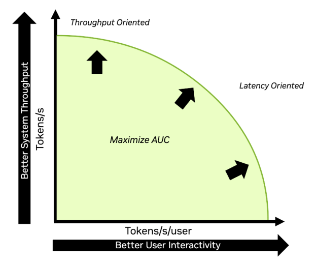
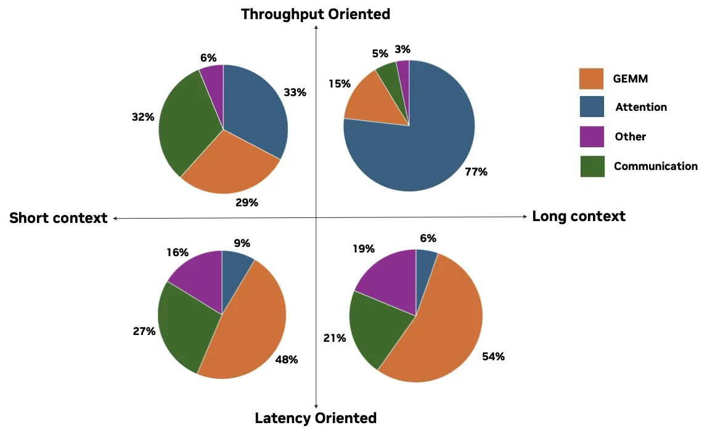
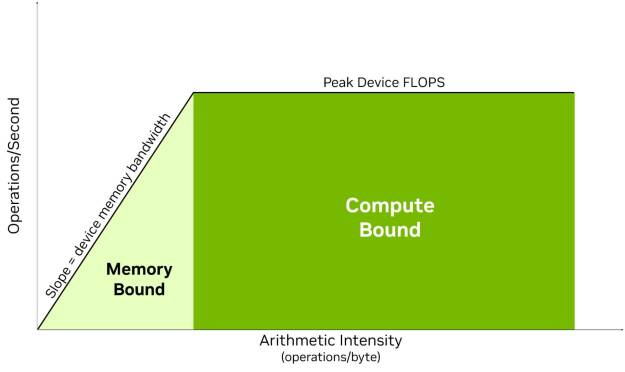
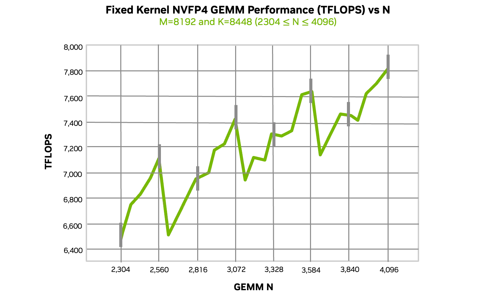
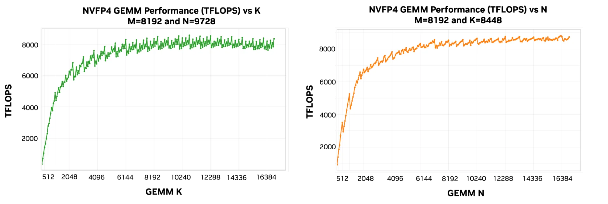
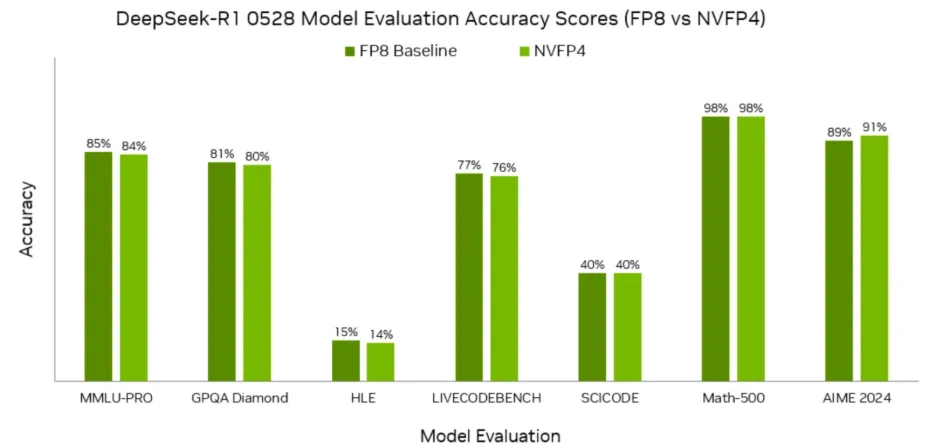
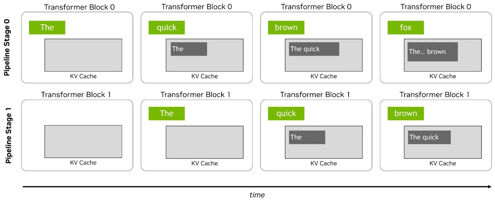
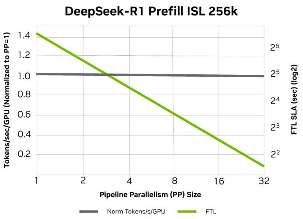

AI模型的部署性能并非只取决于推理引擎的优化——模型架构本身的选择，如层宽、深度、量化方式和并行策略，从根本上决定了硬件能否被充分利用。NVIDIA技术博客近日发表了一篇面向模型开发者的实用指南，系统性地阐述了七条硬件友好型LLM设计规则。这些规则可以简单概括为：让模型「适配」GPU，而不是让GPU去「硬扛」模型。
AI性能归结为三个维度：准确性（模型推理和输出的质量）、吞吐量（数据中心每秒可生成的token数）和交互性（用户感受到的响应速度，主要由延迟决定）。
部署必须平衡三者——准确性再高，响应慢也是浪费；原始吞吐量再大，每个用户的体验卡顿也无意义。在准确性固定的前提下，问题变成了一个二维帕累托前沿：优化一个指标通常以牺牲另一个为代价。目标是将整个前沿向外推，最大化曲线下面积（下图1展示的吞吐量-交互性帕累托前沿）。
本文从两个视角审视这一权衡：系统部署者优先考虑集群吞吐量（tokens/s），用户更看重首token延迟和token间延迟。token间延迟的倒数是tokens/s/用户，值越高意味着响应性越好。

图1：系统吞吐量vs交互性帕累托前沿。来源：NVIDIA工作负载沿两个轴变化：短上下文到长上下文，吞吐量导向到延迟导向。每个象限需要不同的优化策略。
长上下文、吞吐量导向的服务大部分时间花在attention上；延迟导向的服务则增加模型并行度来缩短attention和FFN，但代价是通信开销。短上下文、吞吐量导向的服务在attention和FFN上的时间分配更均匀，可以在大规模上受益于并行（如专家并行）。
阿姆达尔定律适用：优化某一部分的帮助程度取决于该部分占运行时间的比例。如果attention占运行时间的77%，优化前馈层只能带来边际收益——attention路径才是值得投入的方向。

四种饼图展示了LLM执行时间在不同工作负载下的分解情况：attention、FFN和其他部分的占比随场景变化显著。来源：NVIDIATransformer的关键设计选择之一是宽高比：模型宽度与层数L之间的平衡。宽度由两个维度决定：隐藏维度H和MLP层中的中间投影维度H′。这三个维度共同决定了模型映射到并行策略的平滑度以及跨GPU的扩展能力。
在任何硬件上，可达到的性能都受屋顶线模型约束。算术强度（每移动一个字节所执行的计算操作数）决定了工作负载的位置：低的受限于内存带宽（memory-bound），高的受限于设备峰值计算吞吐量（compute-bound）。当目标是最大吞吐量时，你希望将工作负载推入compute-bound区域。
提高算术强度的一个直接方法是增加batch size，但模型形状同样重要。在GB300上的实测（下图4）证实了这一点：当reduction维度（GEMM-K）或投影维度（GEMM-N）较小时，吞吐量急剧下降。
指南1：对于固定参数量的模型，倾向于接近方形的权重矩阵，避免投影维度或reduction维度过小。

图4：GB300 NVFP4 GEMM吞吐量vs维度大小。左图为扫描GEMM-K（reduction维度），右图为扫描GEMM-N（投影维度）。维度越小时吞吐量下降越显著。来源：NVIDIAGPU通过将输出矩阵拆分为tile来执行GEMM，每个tile由一个流式多处理器（SM）计算。在最近的GPU上，SM可以通过clusterMMA联合处理更大的tile，而Cooperative Grid Array（CGA）让整组SM作为一个集群协同工作。
当一个维度不是有效tile的倍数时，边缘tile只被部分填充但仍然消耗完整tile的计算量——未使用的填充部分浪费了周期。图5展示了这一点：使用256×128的基础tile和4×2 CGA，N是256或512的倍数时产生吞吐量峰值。
指南2：模型维度至少应为128的倍数以对齐GPU tile尺寸和缓存行宽度，优先选择256或512的倍数以匹配clusterMMA和CGA形成的更大tile。

图5：GB300 NVFP4 GEMM吞吐量vs GEMM-N（tile对齐测试）。细粒度扫描显示N为256或512倍数时产生明显的吞吐量峰值。来源：NVIDIA在固定参数量预算下，宽模型通过更大的权重复用和更短的串行关键路径，提供更高的算术强度和更低的延迟。这对吞吐量导向和延迟导向的服务目标都有利。
但是，深度也贡献于表征能力，因此存在一个有用的宽度-深度区间，而不是「越宽越好」。只在准确性允许的范围内优先宽度。
指南3：优先考虑更少但更大的运算，而非许多小运算。更宽的Transformer模型比更深的模型更硬件友好。
量化同时帮助compute-bound和memory-bound工作负载：既提高数学吞吐量又减少内存流量。Blackwell系统支持NVFP4以及FP8和FP16/BF16等其他位宽格式。

图6：NVFP4 GEMM在GB300上的吞吐量曲线。两个子图展示了不同维度配置下的性能表现。来源：NVIDIANVFP4专为平衡模型准确性和速度而设计：它对每16个值的微块施加细粒度的FP8（E4M3）缩放，再加上每张量的二级FP32缩放。这种分层缩放显著减少了量化误差，同时保持了4位计算的速度。
在DeepSeek-R1上的测试（下图7）显示，NVFP4在广泛的LLM工作负载上紧密匹配更高精度的准确性。NVIDIA提供端到端工具链：TensorRT Model Optimizer和LLM Compressor支持PTQ、QAT和高级校准。

图7：DeepSeek-R1在NVFP4量化下的准确性对比。NVFP4在多种基准上接近更高精度的准确性表现。来源：NVIDIA大多数矩阵乘法密集的操作（如线性层）可以充分利用NVFP4获得更高吞吐量，同时保持模型保真度。
指南4：在向网络中引入计算密集操作时，考虑部署时能否量化。设计能从低精度执行中受益的层，是从现代GPU中获得最大收益的关键。
在吞吐量导向的服务中，目标很简单：用最少的GPU为尽可能多的用户快速服务。由于最先进的LLM大多是MoE模型，专家并行（EP）是一种非常有效的方法：将attention做数据并行（DP），将FFN专家分布在多个GPU上。
DP attention避免了张量并行（TP）中昂贵的AllReduce开销——该开销随并发度增长而拖低吞吐量。DP attention扩展更自然：增加GPU直接提升全局并发度，从而增大MoE FFN中的GEMM-M。
EP带来的两个挑战是all-to-all通信开销和专家负载不均衡。NVIDIA的Wide-EP特性（TensorRT-LLM）解决了这两个问题：高性能all-to-all内核支持EP在Blackwell多节点NVLink系统上扩展；自适应负载均衡器基于实时负载模式重新分配专家流量。
指南5：复杂、稀疏的大规模MoE模型在采用正确的并行策略（尤其是大规模专家并行扩展）时，仍可实现高吞吐量。
当分离prefill和decode时，流水线并行变得相关。分块流水线并行（CPP）将模型层跨GPU拆分，并将输入上下文分割成块通过流水线流动（下图8），使prefill worker能在紧张的FTL预算内处理长序列。

图8：两阶段流水线示意图。输入token块通过拆分后的模型层流动。来源：NVIDIACPP只有在流水线阶段平衡时才有价值——不平衡会引入流水线气泡，导致部分GPU空闲。保持均衡的有效方法是构建具有可重复层模式的模型（下图9展示了流水线并行规模增长时的性能提升）。
指南6：设计具有规则、可重复层模式的模型，使其易于拆分为平衡的流水线阶段，在满足首token延迟目标的同时实现更高吞吐量。

图9：流水线并行规模从1增长到4时，prefill性能（tokens/s/GPU）的提升效果。来源：NVIDIA延迟导向的服务需要更低的每GPU并发度或更多GPU。但缩小batch最终只减少了attention延迟——FFN延迟变得memory-bound，因为GEMM-N和GEMM-K维度仍然很大，权重读取成为瓶颈。
在这种低并发模式下，attention和FFN应被独立并行化。FFN通过TP、EP或TP×EP加速（TP适合粗粒度MoE，EP适合细粒度MoE）。attention受益于TP和KV并行，但TP只能扩展到KV head数量——现代MQA/GQA/MLA模型KV head很少，这很快成为瓶颈。
Helix并行通过在attention期间沿序列维度分片KV cache，然后重用在FFN中做TP×EP的GPU，克服了这个问题。Blackwell NVL72的高带宽NVLink结构吸收了大部分附加通信成本。
指南7：设计模型和部署方案时，将attention和FFN的并行化解耦，使得扩展GPU能策略性地针对主要瓶颈改善交互性。
在设计下一个模型时，可以将以下七条规则作为检查清单：
1. 保持维度接近方形，对齐到128（理想256）的倍数
2. 优先宽度而非深度
3. 设计模型以支持NVFP4低精度推理
4. 使用规则、可重复的层模式，干净映射到流水线并行上
5. 对大规模MoE模型采用专家并行扩展
6. 分层量化设计，让计算密集操作受益于低精度执行
7. 解耦attention和FFN的并行化策略
如NVIDIA所言："设计更聪明。部署更快速。扩展更宽广。"这些看似小的选择——维度的倍数、宽深比、量化策略、层模式的可重复性——可以显著提升GPU利用率，在同等的硬件上实现更快的推理、更高的吞吐量和更好的交互性。
参考：https://developer.nvidia.com/blog/ai-model-co-design-hardware-friendly-llm-design/